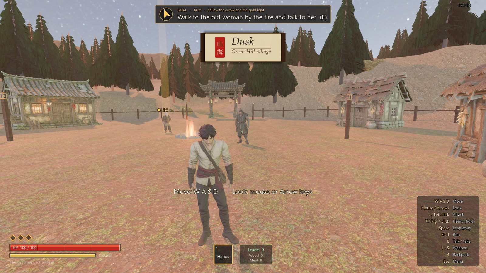
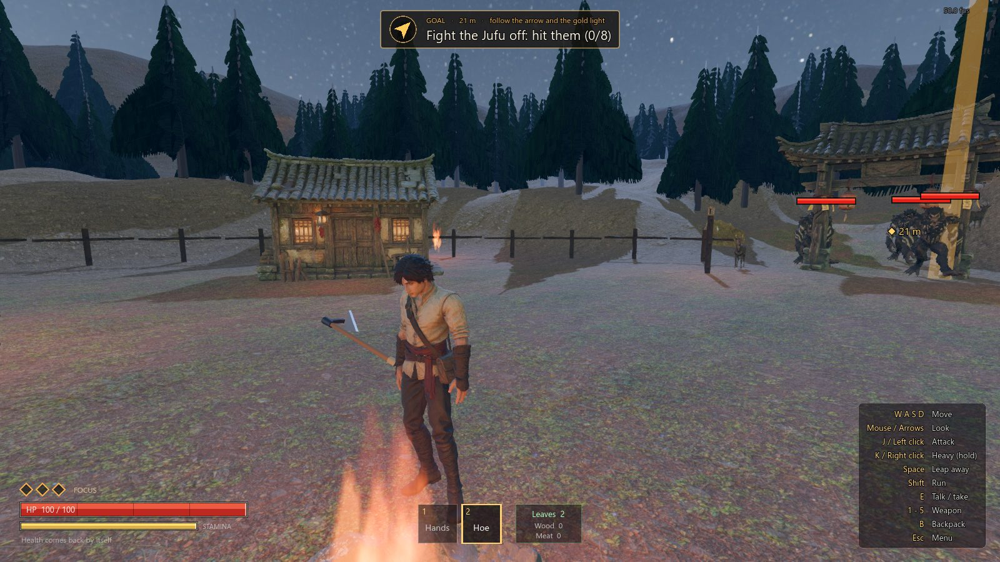

The story故事The night the Jufu came居茀来袭之夜
Dusk falls on Green Hill village. Granny Shen hands you an old farm hoe. Then the villagers run for their houses, a countdown starts, and the Jufu, ink-mad beasts, walk in through the north gate. 暮色降临青丘村。申婆婆递给你一把旧锄头。村民们跑回家中，倒计时开始，被墨染疯的居茀从北门走了进来。
Hit them hard enough and a nine-tailed fox, Bai, steps in. She does not bite you. She knocks you flat, sniffs the black ink still on your fingers, and runs. Why does the ink matter to her? 打到一定程度，九尾狐白现身。她没有咬你，只是把你扑倒，嗅了嗅你指尖残留的黑墨，然后跑开。这墨为什么对她这么重要？
Granny Shen then gives you the Binding Brush and sends you up the hill to Bai's den, where a baby is crying. 申婆婆随后把缚灵笔交给你，让你上山去白的洞穴，那里传来婴儿的哭声。
“It does not kill. It writes a creature back into its page.”“它不杀生，只把生灵写回书页。”


